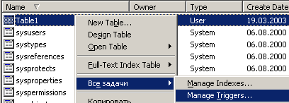

FAQ по Базам Данных
|
Простейший триггер |
|
Ну для начала - что такое триггер? Триггер
- это хранимая процедура, которая
автоматически выполняется при изменении
данных в таблице. Если в таблице с
триггером попытаться выполнить INSERT, UPDATE
или DELETE - выполнится триггер, а уже он
решит, что дальше делать :))).
Запускаем Enterprise Manager из состава SQL Server 2000. Выбираем нашу БД, а в ней - таблицу, на которую хотим установить триггер (ведь триггер "жестко" привязан к конкретной таблице). Теперь щелкнув по таблице правой кнопкой мыши, вызываем меню, в котором выбираем "Все задачи"-> "Управление Триггерами" ("Manage Triggers...").  Появится окошко с заготовкой для триггера. "Болванка" для триггера выглядит примерно так: CREATE TRIGGER [TRIGGER NAME] ON [dbo].[Table1]
FOR INSERT, UPDATE, DELETE AS
Чтобы создать
триггер, нужно указать его имя (вместо
TRIGGER NAME) и удалить
INSERT, UPDATE
или DELETE
- если вы хотите, чтобы вызывалась
обработка только для одной из этих
команд. Теперь нужно добавить код,
который будет исполняться при вызове
триггера. Вот что у меня получилось:
CREATE TRIGGER [MY_TRIGGER] ON [dbo].[Table1]
FOR INSERT, UPDATE, DELETE AS
PRINT "Trigger run!!!"
Все, теперь
давим "Сохранить". Если не появилось
никаких сообщений об ошибках, триггер
нормально установился. Теперь можно
попробовать выполнить запрос вроде
DELETE FROM Table1и будет напечатан текст "Trigger run!!!". Как изменить или удалить триггер? Да все в том же "Управлениями Триггерами" - выбрать триггер, изменить его код или нажать "Удалить". P.S. Немного истории: один человек в форуме на SQL.RU долго и упорно кричал, что он сумел создать триггер такого вида: CREATE TRIGGER [MY_TRIGGER] ON [dbo].[Table1]
FOR SELECT AS
PRINT "Trigger run!!!"
Так вот, должен вас разочаровать,
такой триггер создать нельзя, SQL Server даже
не даст сохранить его :)))
Содержание |